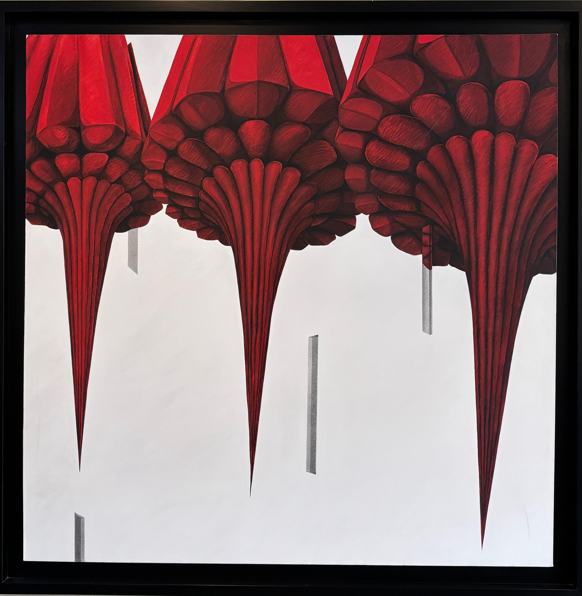

MISS THYCA

El autor utiliza una repetición rítmica de formas cónicas invertidas de gran tamaño, dominadas por el color rojo intenso, para crear una composición impactante y direccional. Las figuras principales contrastan fuertemente con el fondo blanco, lo que activa el principio de figura-fondo de la Gestalt y otorga un peso visual inmediato a las estructuras suspendidas. La semejanza entre las formas y su alineación horizontal generan unidad y patrón, mientras que la orientación descendente de los conos guía la mirada hacia abajo con fuerza visual. Las formas geométricas grises flotantes añaden tensión y profundidad espacial, rompiendo la simetría y aportando ritmo visual. El contraste entre textura densa (en las formas superiores) y vacío (en el fondo) refuerza el equilibrio compositivo a través del contraste y la distribución del peso visual.
🖼 ¿Te diste cuenta…?
🔺 ¿Están cayendo o flotando? Estas formas rojas en punta parecen desafiar la gravedad, como si fueran estructuras suspendidas o raíces que cuelgan de un techo invisible.
🔺 ¿Están cayendo o flotando? Estas formas rojas en punta parecen desafiar la gravedad, como si fueran estructuras suspendidas o raíces que cuelgan de un techo invisible.
🧠 ¿Orgánico o artificial? Aunque parecen hechos de carne o pétalos, su simetría y repetición casi las convierten en artefactos alienígenas o arquitectónicos.
🔍 ¡Mira de cerca! La textura está minuciosamente detallada, cada línea y sombra ha sido trabajada con precisión casi quirúrgica.
🎯 Las figuras grises rectangulares que flotan abajo parecen simples, pero contrastan fuertemente con las formas complejas de arriba. ¿Qué papel juegan?
🌀 ¿Te incomoda o te hipnotiza? Este tipo de imagen genera una sensación ambigua: ¿estás frente a una amenaza o ante algo sublime?